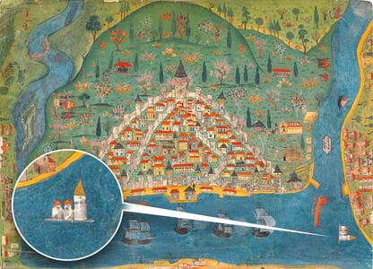
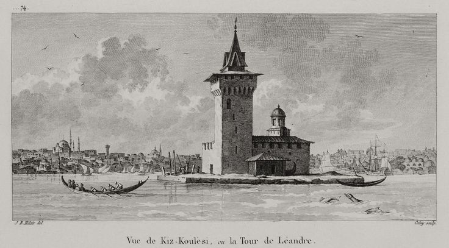
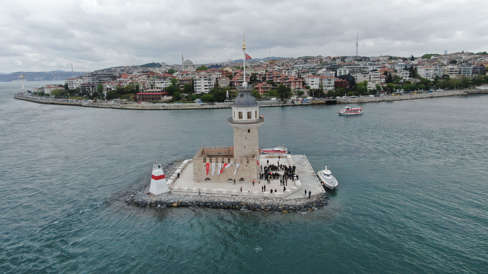
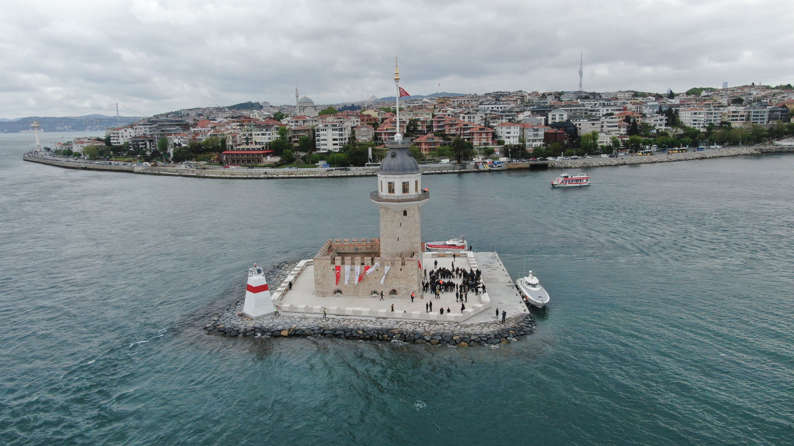

ÜSKÜDAR'IN SEMBOLÜ: KIZ KULESİ
KIZ KULESİ
M.Ö. 5. yüzyılda bugün kulenin bulunduğu adacıkta bir gümrük noktası oluşturulmuş ve Karadeniz’den gelen gemileri denetlemek ve vergi almak amacıyla bir kule inşa edilmiştir.
12. yüzyılda Doğu Roma İmparatoru I. Manuel Komnenos tarafından adacıkta bir savunma kulesi inşa ettirilmiştir. Bu kule ile Sarayburnu’nda Mangana Manastırı’nın yanında bulunan bir kule arasında (Deniz Surları restorasyonu yapılan bölüm) bir zincir gerilerek gemilerin Boğaz’a giriş çıkışı kontrol altına alınmıştır.
Fetih’ten sonra Fatih Sultan Mehmet buraya yeni bir kale inşa ettirmiştir. Kaleye bir nöbetçi birliği yerleştirmiştir. Her akşam yatsıdan sonra ve seher vakti, kulede mehter nöbet çalmaya başlamıştır. Bayramlarda ve padişahların tahta çıktıkları zaman sahil saraylarını ziyaretlerinde Kız Kulesi’nden top atışı yapılması gelenek haline gelmiştir. 
Ahşap kulenin kuzey bölümüne Sultan III. Ahmed’in Sadrazamı, Nevşehirli Damat İbrahim Paşa tarafından Karadeniz ve Marmara’dan gelen gemilere geceleri yollarını göstermesi için fener konulmuştur. Bu tarihten itibaren kule, artık bir kale değil bir deniz feneri olarak hizmet vermeye başlamıştır.
1830-1831 yılları arasında kolera salgınının şehre yayılmaması için karantina hastanesine dönüştürülmüştür. 1836-1837 yılları arasında 20-30 bin kişinin öldüğü veba salgını sırasında hastaların bir kısmı burada kurulan hastanede tecrit edilmiş, karantina ile salgının yayılması önlenmiştir. 1847 yılında Trabzon'da zuhur eden kolera illeti münasebetiyle yolcular ve hastalar Kız Kulesi'nde karantinaya alınmıştır.

Kız kulesi bir müddet radar istasyonu olarak kullanılmıştır. Deniz taşımacılığı seyrüsefer emniyeti için kulede akşamları ışık yakılmış, sisli havalarda da sis düdüğü çalınmıştır. Ayrıca Harem ve Liman kılavuzluk istasyonlarının görüş mesâfesi kısa olduğu için, 1983 yılına kadar boğazdan geçen bütün gemileri 24 saat bildirme ve kontrol görevi, Denizcilik İşletmeleri’nin iki memuru tarafından yapılmıştır. 
Fenerler İdaresine devredilen kuleye Fransız şirket tekrar fener ilave etmiştir. İstanbul Liman İdaresi’ne geçtiğinde fener işlevinin yanı sıra gaz deposu olarak da kullanılmıştır.
Kız kulesi bir müddet radar istasyonu olarak kullanılmıştır. Deniz taşımacılığı seyrüsefer emniyeti için kulede akşamları ışık yakılmış, sisli havalarda da sis düdüğü çalınmıştır. Ayrıca Harem ve Liman kılavuzluk istasyonlarının görüş mesâfesi kısa olduğu için, 1983 yılına kadar boğazdan geçen bütün gemileri 24 saat bildirme ve kontrol görevi, Denizcilik İşletmeleri’nin iki memuru tarafından yapılmıştır. 